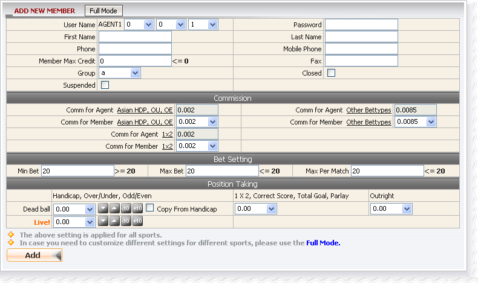
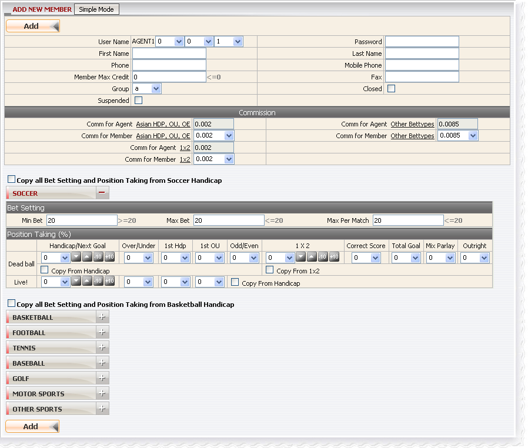
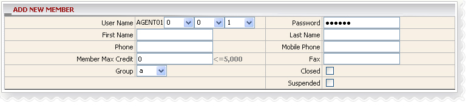
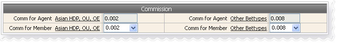
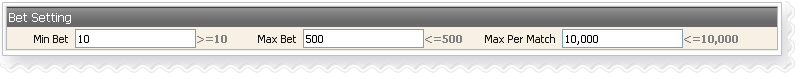
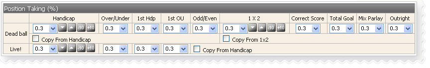
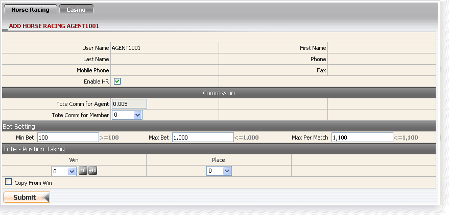

New member
Definition:
This function allows agent to create a new member then edit the commission, bet setting and position taking for that member.
When we first launch New Member function, Add New Member page will display in simple mode which settings will be applied for all sport types but we can reverse to Full mode at any time by clicking Full Mode button.
- Simple Mode: all sport types will have the same setting.

New member - Simple Mode
- Full Mode: different sport type different setting.

New member - Full Mode
How to?
To accomplish creating a new member, you have to fill in:
- Member info registration.
- Commission setting.
- Bet setting.
- Position taking setting.
Member info registration
This is to register all necessary information for a member. In this form, the following things should be noted:
- Member max credit cannot be greater than Agent available credit, Agent's Member max credit set by upline.
- There are 8 groups for member: a, b, c, d, hka, hkb, hkc, hkd. Different groups mean different member commission settings.
- Password must be at least 6 characters including at least 2 letters and 2 digits.
- If your status is suspended then your member will have the status “suspended” which means he/she cannot place bet
- If your status is closed then all of your members will be closed as well.
- You can modify your member status to suspended at anytime if you’re not suspended.
- If you change your member status to closed then he/she cannot login member site to place bet.

Member Information
Commission setting:
This is where to set the discount for member, just select a value as discount rate from the drop down list and remember that member discount cannot be greater than agent discount.

Commission Setting
Term definition:
- Comm for Agent Asian HDP, OU, OE: agent discount set by his/her upline and applied for Handicap, Over/Under and Odd/Even bet types.
Formula: Agent commission = stake * agent discount * upline PT
- Comm for Member Asian HDP, OU, OE: member discount set by agent and applied for Handicap, Over/Under and Odd/Even bet types.
Formula: Member commission = stake * member discount
Bet setting:
This setting will limit bet amount applied for member and warning message will appear to notify member if the rule is violated.Be advised that Min Bet < Max Bet < Max Per Match

Bet Setting
Definition:
- Min bet: minimum amount that the member must bet per ticket.
- Max bet: maximum amount that the member can bet per ticket.
- Max per match: maximum amount that the member can bet per match.
Remark: The different entry/team name will considered as another match.
For example, the following matches are all considered different matches or separate
events.
a) "Spain (N) -vs- Netherland2010" [FIFA World Cup South Africa]
b) "Spain 00:00-15:00 -vs- Netherlands 00:00-15:00" [2010 FIFA World Cup South Africa - SPECIFIC 15 MINS OVER/UNDER]
c) "Spain 15:01-30:00 -vs- Netherlands 15:01-30:00" [2010 FIFA World Cup South Africa - SPECIFIC 15 MINS OVER/UNDER]
Where the league name is the same, however with different team names, the above mentioned condition still applies.
Position taking setting:
This setting will determine your win/loss amount on member stake. We can customize different settings for each sport type in Full Mode.

Position Taking Setting
After finishing all of these steps, system will direct you to the next page to update setting for Horse Racing and Casino
Update Horse Racing's setting
Member should be enabled Horse Racing in order to place HR bets.

Horse Racing
Update Casino's setting
Member should be enabled Casino in order to play Casino games.

Casino
Term Definition:
Dead ball: position taking for this option will be applied to bet while match is still on schedule.
Live: position taking for this option will be applied to bet while match is live.
Accumulated transferable amount: total amount included today win/loss that can be able to transfer and this value is reset to Max Transfer Credit manually or daily noon time.
Max Transfer Credit : maximum amount that can be transferred to play Casino. This value is ranged from 0 to given credit and set "No Limit" by default.
Casino Bettling limit: this value is set for member, and will limit the betting amount on each game. Member will have some options to select affordable betting range before the game is proceeded.
Note: Accumulated transferable amount = Max Transfer Credit + Today Win/loss